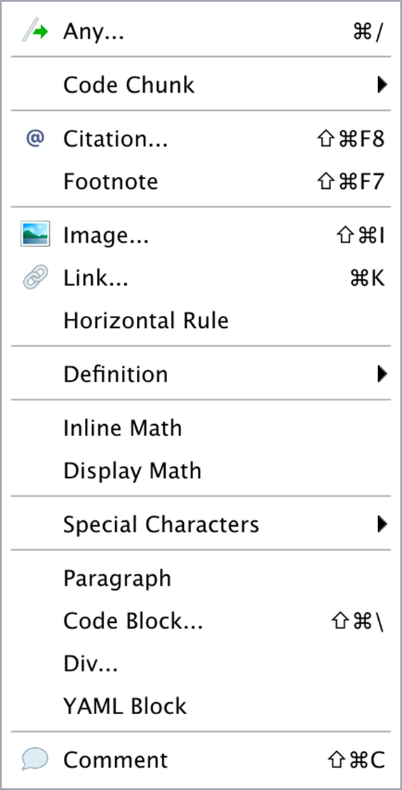
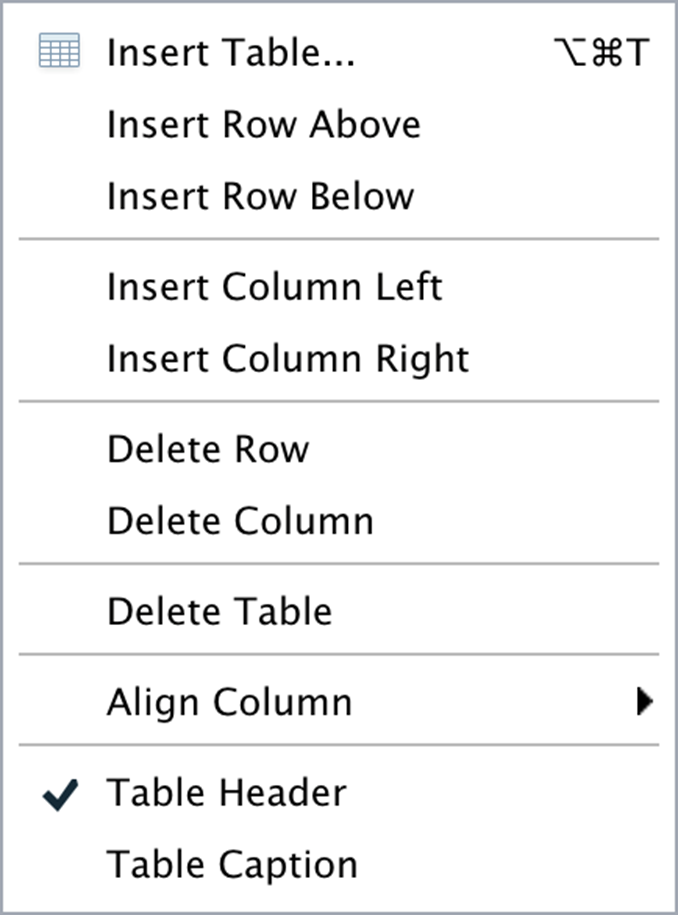

R Lecture 3
소통하기: Quarto
소통하기: Quarto
2025-09-23
패키지


기능

https://allisonhorst.com/cetinkaya-rundel-lowndes-quarto-keynote
렌더링(rendering)
knitr패키지:.qmd를.md로 전환pandoc:.md를 다양한 디지털 포맷으로 전환


마크다운 텍스트
소스 에디터(source editor) vs. 비주얼 에디터(visual editor)
마크다운 언어의 사용자 편이성을 한 번 더 강화한 것




Zotero

Quarto Pub

레이아웃 요소 1: 카드

레이아웃 요소 2: 탭셋

레이아웃 요소 3: 페이지

레이아웃 요소 4: 내비게이션 바

title
author
format: dashboard
logo
nav-buttons
scrolling: true
theme: 25 bootswatch themes(https://quarto.org/docs/dashboards/theming.html)
레이아웃 요소 5: 사이드바